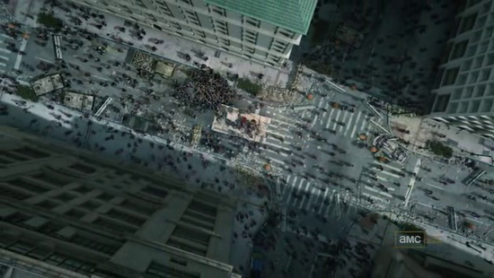

Dec 17, 2010 · 1 minute read · Comments
Games development
Durante todo el día de mañana viernes 17 y el próximo lunes 20 de diciembre se celebrará el I Hackathon en la Universidad de Cádiz de la mano de la Oficina de Software Libre. Como no podía ser de otra forma, el proyecto IberOgre y Sion Tower estará presente tanto como para buscar colaboradores como para ofrecer mano de obra barata (básicamente gratis).
Pero… ¿qué narices es un hackathon? Pues es una especie de maratón de desarrollo en el que los participantes presentan sus proyectos junto con una lista de pequeñas tareas pendientes. Durante el transcurso del evento los participantes abordan las tareas por lo que se abre una gran oportunidad para trabajar en otros proyectos (comenzados o completamente nuevos). También entran en juego los hackamuses, pequeñas charlas informales al más puro estilo BarCamp. Podéis encontrar más información en la noticia de la página oficial de la OSLUCA.
Es una grandiosa oportunidad para abandonar el individualismo por una colaboración activa. Al fin y al cabo será una convivencia en el que se intercambien experiencias y se actúe en equipo. IberOgre y Sion Tower no podían faltar al evento así que mañana estaremos por allí y trabajaremos duro durante todo el fin de semana. Por último, dejo el cartel completo.
Dec 9, 2010 · 3 minute read · Comments
Hobbies
Los zombies están de moda, recibimos constantemente películas como Zombieland, El amanecer de los muertos o 28 días después. La fiebre de infectados ha invadido los videojuegos con Left 4 Dead, Plants versus Zombies o Dead Rising entre muchos otros. Las producciones impactantes, gores y casposas están a la orden del día y el mundo de las series no podía ser menos. La primera temporada de la adaptación del cómic con el mismo nombre ha llegado a su fin y aquí les ofrezco mis humildes impresiones.
Disclaimer: no he leído el cómic, por tanto, no dispongo de una opinión de la serie como adaptación sino como producto individual e independiente. Según tengo entendido son muy similares pero divergen en muchos aspectos.

Planteamiento libre de spoilers
El policía Rick Grimes se despierta muy aturdido en el hospital tras haber sido herido de bala en una persecución. Es demasiado tarde y todo lo que quedan son hambrientos muertos vivientes medio devorados. Su impulso inmediato es encontrar a su familia y aquí es donde comienza la búsqueda de un grupo de supervivientes de un nuevo comienzo. Hasta aquí puedo contar pues dada su corta duración (6 episodios de 1 hora) sería soltar un spoiler del copón.
Zombies “the hardcore way”
Queda patente que The Walking Dead aborda el tema de los muertos vivientes desde el prisma de la acción, el drama, la tensión y la seriedad. No es una de esas parodias que han surgido últimamente aunque, en absoluto, pretendo desmerecer a estas últimas. La serie cuenta la historia de un grupo de supervivientes que se ve obligado a vivir al límite de sus posibilidades físicas y psicológicas. Seres queridos con las entrañas desparramadas por el suelo que se levantan tras unas horas de su muerte. Acudir a la boca del lobo para abastecer al grupo en tiempos de necesidad y otras penurias demenciales.
En fin, ¿qué les voy a contar? A estas alturas estarán habituados a las producciones de zombies. Efectivamente, The Walking Dead apuesta por el camino duro y explícito hasta decir basta. Por supuesto, hará las delicias de los más aficionados al género, sin tapujos ni pudor. Será un género manido pero es innegable que ofrecen situaciones que no hemos visto en ningún sitio. Digamos que mantiene el sabor clásico pero con elementos innovadores.

Grandes altibajos pero… “I need “braaaains!”
El comienzo de The Walking Dead es simplemente épico, me dejó completamente boquiabierto y con ganas de más. Ningún capítulo ha sido malo pero sí es cierto que la calidad y las situaciones impactantes varían demasiado, creo que no han sabido mantener un ritmo constante. En algunos episodios me gustaría haber visto más acción, que ocurriesen más cosas. En cualquier caso, el conjunto sigue siendo más que notable y pide a gritos una segunda temporada (ya confirmada).
Lo dicho, quiero más The Walking Dead y estoy pensando seriamente en comprarme los cómics, los cuales cuentan con una crítica varios puntos más positiva. A pesar de las impresiones encontradas que me ha producido la serie creo que globalmente las virtudes vencen con amplitud. Si sois de estómago débil no os la recomendaría pero si os atrae el género y/o estáis dudando si darle una oportunidad, ya tardáis en lanzaros de cabeza.
Dec 8, 2010 · 3 minute read · Comments
Games development
El puente se acaba y , entre otras cosas, me ha permitido darle un pequeño pero importante impulso a IberOgre. Ligeras correcciones o ampliaciones en varios artículos y un par completamente nuevos. La wiki va sobre ruedas y no hemos tenido problemas de disponibilidad desde el cambio de servidor, ¡gracias de nuevo a la OSLUCA! Lo que sigue es un pequeño resumen del trabajo de los últimos días.
Hasta el momento sólo conocíamos el proceso de inicialización de Ogre. Este artículo pretendía continuar desde dicho punto y llegar hasta la carga de un modelo 3D en pantalla. Debido a la multitud de pasos necesarios y las distintas vías que se nos abren, el texto resultante tiene una extensión considerable. Finalmente se tratan los siguientes puntos:
- Creación de una ventana.
- Elección y creación del gestor de escenas adecuado (SceneManager).
- La cámara y el frustrum.
- La utilidad de los viewports, juego a pantalla dividida.
- Creación de una escena, añadiendo nodos con entidades adjuntas.
- Dos aproximaciones al main loop en Ogre.
- Ejemplo comentado a modo de resumen.
En mi opinión, se trata de un artículo de máxima importancia ya que es el primero en el que comenzamos a renderizar elementos. Llevaba cierto tiempo publicado y estos días me he dedicado a completarlo (prestando especial atención al ejemplo).
¿Qué sería de nuestro videojuego si no pudiésemos darle movimiento a los elementos que lo componen? Este artículo se centra en la manipulación del scene graph tanto en cuanto a su jerarquía como a sus componentes individuales (SceneNodes). Básicamente se abarcan los siguientes aspectos:
- Sistema de coordenadas de Ogre.
- Información de un nodo, objetos adjuntos y descendientes.
- Espacios de transformación.
- Movimiento, rotación y escalado.
- Control de tiempo en el bucle de juego.
- Ejemplo. El artículo aún no está completo ya que le falta el ejemplo principal y un par de esquemas explicativos.
He querido publicarlo para que los lectores puedan seguir aprendiendo y reportando los problemas encontrados (aunque creo que es correcto en su mayoría).
Ogre sólo acepta su propio formato binario .mesh a la hora de cargar modelos tridimensionales por razones de eficiencia y optimización. Esto significa que debemos exportar nuestras creaciones a dicho formato. En IberOgre daremos soporte a Blender y su magnífico script Blender Exporter. En este artículo encontraréis:
- Instalación de Blender Exporter (Windows y GNU/Linux).
- Proceso de exportación de un modelo con todas las opciones comentadas.
- Recomendaciones a la hora de realizar una exportación.
El trabajo duro continua
Durante la última semana he estado trabajando fuerte y se ha notado en la forja de Red Iris. Un porcentaje de actividad que rozaba el 100% y me situaba entre los 5 proyectos más activos. ¡Creo que para contar con un único desarrollador es mucho decir! Espero continuar siendo productivo y generar más contenido pronto.
Dec 5, 2010 · 2 minute read · Comments
Games development
Gestionar de forma eficiente el tiempo que le dedico al proyecto es complicado. Tras una dura mañana de trabajo, redactar un artículo para IberOgre o programar un módulo de Sion Tower se vuelve una carrera cuesta arriba. Aún así no me ha ido del todo mal hasta el momento, pues la wiki tiene varios artículos publicados y el GDD del videojuego está avanzado. En cualquier caso, espero no ser el único que tenga estos problemas. Al grano, con el objetivo de aumentar mi rendimiento he decido utilizar el sistema de tareas que ofrece la forja de Red Iris.
¿Por qué el sistema de Red Iris?
Sé que no es el mejor software para administrar y controlar las tareas de un proyecto pero tiene sus ventajas. La primera es su carácter público. No tendría sentido trabajar en software libre y mantener las tareas en un fichero privado de mi disco duro. De esta manera los interesados pueden ver en qué se trabaja actualmente y cuáles serán las características o artículos que se harán públicos en el futuro próximo.
Además, cualquier interesado conocerá los puntos flacos y las tareas que se han quedado descolgadas esperando un empujón. Por tanto, creo que es una buena estrategia para atraer colaboradores y facilitarles su integración. ¡Aún estoy a la caza de artistas!
Organización de las tareas
Para una mayor claridad, he organizado las tareas de la siguiente forma:
De cara al Hackathon que se celebrará en la Universidad de Cádiz para los participantes del V CUSL y otros proyectos, crearé las tareas que necesito. ¡Seguro que será una experiencia que merece la pena!
Espero poder aumentar mi productividad estableciendo tareas cortas y objetivos realizables a corto plazo. Trabajando poco a poco pero de forma constante conseguiré buenos resultados.
Dec 4, 2010 · 2 minute read · Comments
Computing

Como sabéis, GRUB (GRand Unified Bootloader) es un fantástico software que nos permite elegir entre los sistemas operativos que tengamos instalados en el momento del arranque. Para muchos es la salvación en una transición de Windows a GNU/Linux mientras que para otros es la forma de acudir suplicando a otro Kernel cuando el principal da problemas. El único problema que puede tener es que es un bastante feo. Al rescate de los vanidosos y acude BURG (Brand-new Universal loadeR from GRUB), nótese la ironía infinita al darle la vuelta a “GRUB”.
BURG sustituye al clásico sistema de arranque ofreciéndonos diversos estilos muy atractivos para personalizarlo. Instalarlo en Ubuntu es muy sencillo, simplemente sigue estos pasos:
Añade estas líneas al fichero /etc/apt/sources.list:
deb http://ppa.launchpad.net/bean123ch/burg/ubuntu maverick main
deb-src http://ppa.launchpad.net/bean123ch/burg/ubuntu maverick main
Sustituye maverick por el nombre de tu distribución. Tras esto, actualiza tus paquetes con:
sudo apt-get update
sudo apt-get install burg
Debes aceptar cuando te avisen sobre la firma desconocida puesto que confiamos en la fuente. Para configurar BURG y hacer que sustituya al clásico GRUB debemos hacer:
sudo burg-install /dev/sda
sudo update-burg
Cambia /dev/sda por el nombre del disco duro donde tengas instalado el gestor de arranque. Para elegir el tema de BURG puedes utilizar el emulador con el que se distribuye:
sudo burg-emu
Existen ciertos atajos de teclado que te vendría bien conocer para configurar BURG a tu gusto:
- t: abre la lista de temas disponibles
- f: cambia entre modo reducido y completo. En el modo reducido no aparecen todos los kernels antiguos.
- c: abre una terminal.
Muchos atajos más que puedes encontrar en la documentación oficial. Bien, llegados a este punto serás mucho más molón y podrás enseñárselo a tus coleguillas. BURG proporciona un sistema para personalizar los temas, puedes encontrar más información al respecto aquí. Disfrútalo.